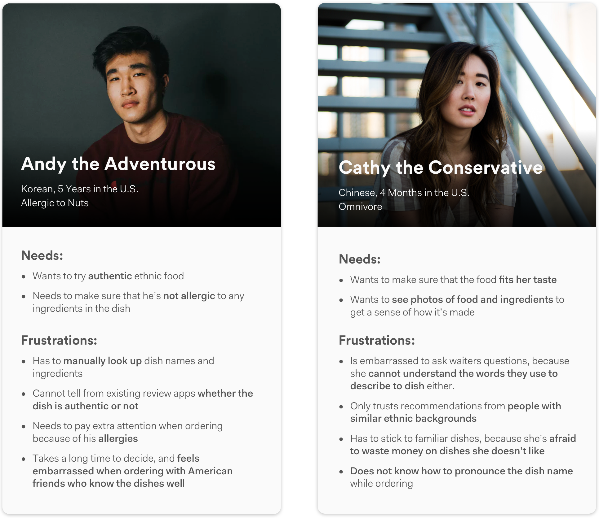

Overview
Problem
International students experience lots of difficulties ordering in ethnic restaurants in the U.S.. Even the most common terms like "burrito" or "lasagna" sound foreign to them due to lack of prior exposure. A lot of them feel embarrassed and frustrated visiting ethnic restaurants, and end up not exploring the diverse cuisine option available in the U.S..
Solution
We designed Eatxplore, a mobile app that provides personalized dish recommendations and reviews to users based on their own ethnicity and the cuisine of the restaurant. It also enables users to quickly see the dish/ingredient name in their own langauge, and alerts them of potential dietary constraints based on the dish's ingredients.
My Role
UX Design/Research Lead
Timeline
Jan. 2018 - Apr. 2018
Refined in Sept. 2018
Team Members
Tony Jin, Danrui Sun, John Baek (Developer), Victor Kim (Developer)
Tools
Balsamiq, Sketch, InVision, Framer X
Our Approach
My Contribution
As the Lead UX Designer and Researcher on the team, I advocated for conducting user interviews, synthesis sessions and brainstorming sessions before arriving at solutions.
I led all the research & design activities with other engineers, created wireframes, high-fidelity designs, and interactive prototypes for user feedback & testing. I created the concept video and led the presentation of the app during the Georgia Tech CIC competition.
After the group project finished, I refined the design on my own, conducted more testing sessions, and iterated on the design for learning purposes.
Design Outcome
Original Concept Video
Here's the video I created for the Georgia Tech CIC competition. It features an early version of the design to illustrate the concept.
Final Design
The final design will be available soon.
Research
Competitive Analysis
We first looked into the market to examine whether existing products can help international students better order in ethnic restaurants.
We found that:
- Apps similar to Yelp and TripAdvisor contain restaurant menus and reviews, but the content is generally American-centric.
- With dish & ingredient names in languages like Spanish or Italian, internationals who had no exposure to those dishes still cannot understand what each dish is made of.
- Internationals can use translation tools like Google Translate or Waygo to translate dish names and ingredients, but these tools only provide a brief translation, with no additional information on the dish’s taste or quality.
- People need to search for each word they don’t understand, which takes time and effort.
Therefore, we hope to create a tool that can tailor to the needs of internationals, to help them quickly understand what each dish is made of, and predict which dish they might like.
Interviews & Affinity Mapping
To better understand how international students currently order in ethnic restaurants and identify potential problems, I advocated for conducting user interviews first before diving into solutions. I also invited our developers to participate in affinity mapping sessions with us, so that as a group, we can brainstorm solutions based on our findings.
We interviewed around 10 people who have stayed in the U.S. for different amount of time, ranging from 4 months to 5 years. We found that:
- Even those who have been in the U.S. for a long time struggle to understand dish names and ingredients in ethnic restaurants, and need to Google them one by one.
- International students usually want to see pictures of the food, but that is not always available on the menu.
- Some people want dish recommendations from those who have similar ethnic backgrounds as they do; others want recommendations from those who are familiar with the dish.
- Some people have difficulties pronouncing dish names, which can be embarrassing in front of American friends.
Because of these difficulties, a number of internationals choose to stick to familiar dishes when ordering in these restaurants; others end up not visiting these restaurants at all, even when invited by their American friends.
Personas
To better guide our design and enable everyone on the team to empathize with our users, I further synthesized the interview results and came up with the following personas:
Design
Ideation
With our research findings and personas in mind, I invited our engineers and the other designer to brainstorm solutions together. I encouraged them to come up with as many ideas as possible without considering feasibility at this stage.